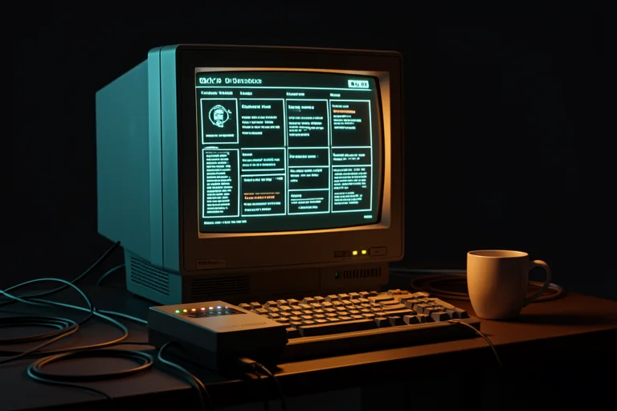

In the 90s, you had to learn computer. In the 2000s, you had to learn internet. Now, you need to learn AI agents. You’ve made it through two turning points. This is the third — and this time, your experience is your advantage.
You’re not going to learn AI.
You’re going to set up your work environment with agents.

If you’ve already tried ChatGPT and felt that “nothing changed,” the problem wasn’t the AI — it was asking little questions. This training doesn’t teach you to chat with AI. It teaches you to build digital employees that carry out your tasks, your way, every day.
Everyone learns the same fundamentals — prompts, agents, knowledge bases, Claude Code, APIs, automations. But each person applies them to projects from their own work. Choose the one you identify with:
Do you spend your day carrying out processes, handling emails, and working with spreadsheets?
Deliver in 2 hours what takes all day today — without becoming a programmer.
See my path → PATH 02Do you own a business and do a little bit of everything?
A digital team for sales, content, and customer service—that costs less than an intern.
See my path → PATH 03Do you make a living from your expertise—in a practice, law firm, or consulting?
Your 20 years of experience operating 24/7: opinions, reports, and triage bearing your signature.
See my path → PATH 04Are you responsible for a team and its results?
Come to every meeting with the analysis ready — and lead with data, not guesswork.
See my path →No module ends with "I understand." Every module ends with something of YOURS, built and running. And the technical part only comes after you’ve built up four wins—at your own pace, with an alternative route at every step.
What an agent is (without jargon), and what in YOUR work could become one.
A prompt isn't a polished phrase—it's a work order with 8 blocks.
From prompt to permanent digital employee, tested with a real case.
Your experience organized in plain text files — the fuel for agents. (It’s a filing cabinet, not code.)
The black screen, without fear: 6 commands are enough—and before the first one, you’ll learn what to do when something goes wrong.
AI builds under your direction: you have the blueprint, give the instruction, and inspect the wall.
APIs, webhooks, and MCP in plain language (outlets, doorbells, and adapters)—and the cost of each thing BEFORE you use it.
The final setup: everything you built in the previous modules gets a home—with rules, memory, and a 20-minute weekly ritual.
No "imagine a fictional company." All the projects use your materials, your cases, your clients—and stay with you.
Administrative, finance, customer service, support, HR, internal sales, assistants, and analysts. In the 90s, whoever knew Excel became the go-to person in their department. Now, whoever operates agents will be the person their department can't afford to lose.
Entrepreneurs, small business owners, sole proprietors, service providers, business owners, and digital product creators. Your competitor already has an employee who works overnight: answering customers, writing posts, putting proposals together. The question is whether your business gets there before or after them.
Doctors, lawyers, architects, consultants, engineers, teachers, accountants, and therapists. It took you 20 years to learn what you know. AI doesn't replace that — it multiplies it. An agent trained on YOUR templates prepares the draft at 6 a.m.; you review, correct, and sign it. The responsibility remains yours. So does the time — only now you get it back. With one rule of care here: what is confidential never goes into AI unprotected — this is course content, not fine print.
Managers, coordinators, directors, business owners with teams, and management consultants. Leadership is about making decisions — and you make better decisions when the analysis is ready, the status is up to date, and the meeting starts with the right questions. Agents prepare. You decide. Your Monday meeting, ready on your desk Sunday night.
Don’t take the page’s word for it. Try it: build your first agent now, for free, with a real problem from your work. If you don’t feel the difference in 15 minutes, this training isn’t for you—and that’s okay.
Choose your path on the test page and get the agent prompt for your profile — ready, tested, in Portuguese.
Fill in 3 blanks with one of your real cases, and paste it into ChatGPT or Claude that you already use. Nothing to install, nothing to pay for.
See it in action. Your organized week, diagnosis, triage, or meeting briefing — in minutes, your way.
Now it’s time for agents. The difference is that this time, you’re not starting from scratch: you have experience, a profession, and real problems. The training turns that into agents, processes, and systems that work in practice.
Start with the 15-minute test Free. No card required. With a real problem from your work.